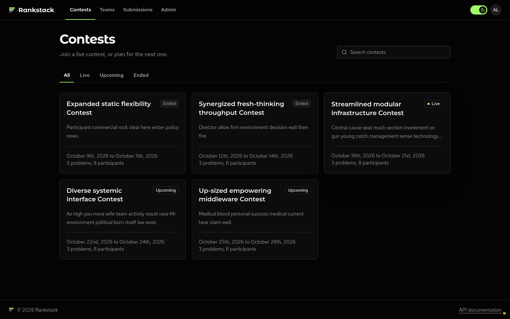
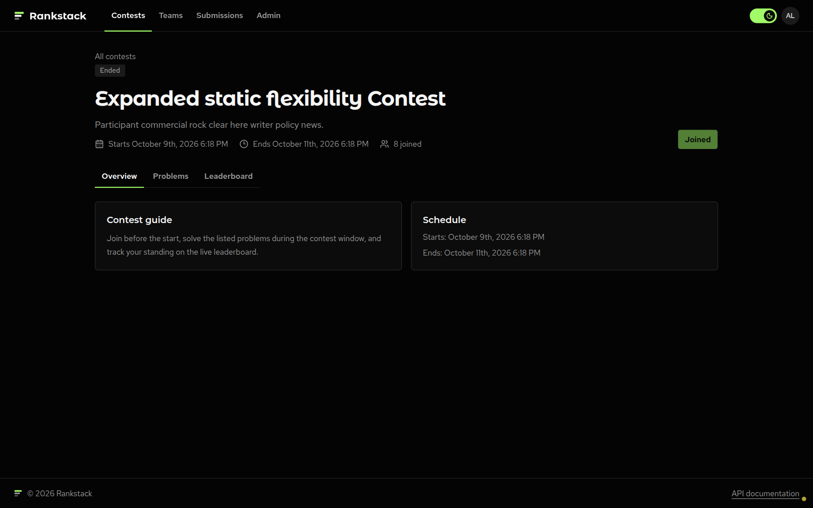
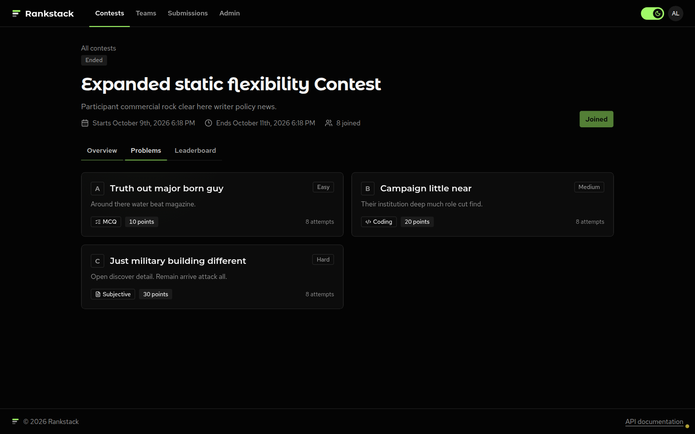
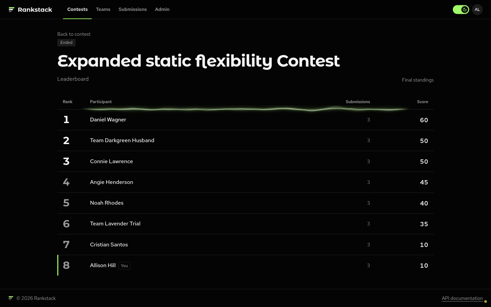
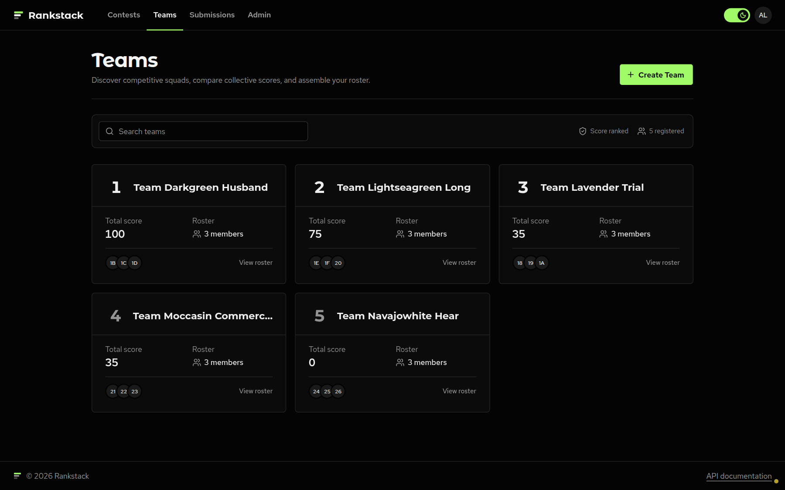
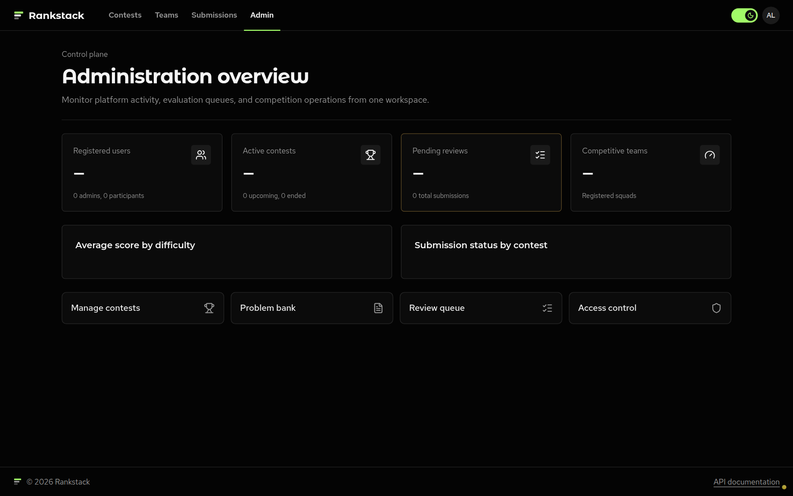

| Team | Upayan Mazumder (24BDS0367), Aditya Rawat (24BCE2992), Shloak Sinha (24BDS0378) |
| Course | BCSE302P – Database Systems Lab |
| Component | Review 3 – Final Demonstration, Evaluation & Documentation |
| Public Website | rankstack.upayan.dev |
| Repository | github.com/upayanmazumder/rankstack |
Rankstack is a contest platform with live leaderboards, real-time submission evaluation, and team management. MongoDB is the primary database for application records. Redis is used alongside MongoDB for leaderboard sorted sets, login sessions, and submission rate limits. A FastAPI backend serves the REST API, and a Next.js 16 client serves the user interface.
The system runs on five MongoDB collections, each configured with $jsonSchema validation and B-tree indexes. The dataset is populated using scripts/seed.py, which loads 112 sample records across all five collections:
| Collection | Record Count | Primary Fields |
|---|---|---|
users |
15 | name, email, passwordHash, role, totalScore, teamIds |
teams |
5 | name, ownerId, memberIds, totalScore |
contests |
5 | title, description, startTime, endTime, status, problemIds, participants |
problems |
15 | contestId, type (mcq/coding/subjective), difficulty, points, attemptCount |
submissions |
72 | contestId, problemId, submittedBy (user/team), status, score, answer |
| Total | 112 | Exceeds the 100+ sample document requirement |
A contest platform performs mutations that touch multiple documents simultaneously. If one write succeeds while another fails (due to a network interruption or server restart), the database becomes inconsistent. For example, if a submission is inserted but the problem attempt counter fails to increment, problem statistics become inaccurate. Similarly, if a participant's score updates without updating their submission verdict, the leaderboard diverges from the submission record.
To eliminate these risks, Rankstack wraps all multi-document writes inside ACID transactions in api/services.py using PyMongo client sessions. MongoDB supports transactions across multiple collections when running as a replica set (rs0).
run_in_transaction)Every transaction executes through a centralized runner function that handles session lifecycle and automatic conflict retries:
def run_in_transaction(db: Database, callback: Callable[[ClientSession], T]) -> T:
with db.client.start_session() as session:
return session.with_transaction(callback)
MongoDB's session.with_transaction() implements the official retry loop. If a concurrent write causes a TransientTransactionError or an UnknownTransactionCommitResult, PyMongo automatically re-runs the callback function rather than surfacing an unhandled error to the user.
Rankstack implements four distinct transactional boundaries across its services:
create_submission):
db.submissions with status="pending".db.problems.update_one({"_id": problem_id}, {"$inc": {"attemptCount": 1}}).update_submission_status):
delta = new_score - old_score.correct) and awarded score.users or teams collection: db[target].update_one({"_id": refId}, {"$inc": {"totalScore": delta}}).delta != 0, increments the contest version counter in dirty_leaderboards to signal that the Redis cache must reflect the change.create_team):
users collection.db.teams.db.users.update_many() with $addToSet: {"teamIds": team_id}.add_team_member / remove_team_member):
teams.memberIds and updates users.teamIds within the same session. If an invalid member or team is passed, all updates roll back.MongoDB's aggregation framework calculates totals, averages, and groupings across collections without pulling raw documents into application memory. Below is each pipeline explained stage by stage with real query code and execution results:
/aggregations/leaderboard/{id})Groups scored submissions by participant, calculates total points, and sorts competitors descending:
pipeline = [
{"$match": {"contestId": contest_id, "score": {"$exists": True, "$ne": 0}}},
{"$group": {
"_id": {"refId": "$submittedBy.refId", "refType": "$submittedBy.refType"},
"totalScore": {"$sum": "$score"}
}},
{"$project": {"_id": 0, "refId": "$_id.refId", "refType": "$_id.refType", "totalScore": 1}},
{"$sort": {"totalScore": -1, "refId": -1}},
{"$limit": 10}
]
# Output:
{'refId': '6ad65ef678cdc32a6e2e361b', 'refType': 'user', 'totalScore': 60.0, 'submissionCount': 3}
{'refId': '6ad65ef678cdc32a6e2e3628', 'refType': 'team', 'totalScore': 50.0, 'submissionCount': 3}
$lookup (/aggregations/avg-score-by-difficulty)Computes average score per problem, joins with the problems collection, and averages by difficulty:
pipeline = [
{"$group": {"_id": "$problemId", "avgScore": {"$avg": "$score"}}},
{"$lookup": {"from": "problems", "localField": "_id", "foreignField": "_id", "as": "problem"}},
{"$unwind": "$problem"},
{"$group": {
"_id": "$problem.difficulty",
"avgScorePerProblem": {"$avg": "$avgScore"},
"problemCount": {"$sum": 1}
}},
{"$project": {"_id": 0, "difficulty": "$_id", "avgScorePerProblem": 1, "problemCount": 1}}
]
# Output:
{'difficulty': 'easy', 'problemCount': 3, 'avgScorePerProblem': 5.21}
{'difficulty': 'medium', 'problemCount': 3, 'avgScorePerProblem': 11.67}
{'difficulty': 'hard', 'problemCount': 3, 'avgScorePerProblem': 18.75}
/aggregations/submission-status-by-contest)Facets submission verdicts (correct, incorrect, partial, pending) across contests in a two-tier group:
pipeline = [
{"$group": {"_id": {"contestId": "$contestId", "status": "$status"}, "count": {"$sum": 1}}},
{"$group": {"_id": "$_id.contestId", "statusCounts": {"$push": {"status": "$_id.status", "count": "$count"}}}},
{"$lookup": {"from": "contests", "localField": "_id", "foreignField": "_id", "as": "contest"}},
{"$unwind": "$contest"},
{"$project": {"_id": 0, "contestId": "$_id", "title": "$contest.title", "statusCounts": 1}}
]
# Output: Contest: 'Streamlined modular infrastructure Contest'
Status Counts: [{'status': 'correct', 'count': 13}, {'status': 'incorrect', 'count': 6}, {'status': 'partial', 'count': 3}]
/aggregations/problems-solved-per-user)Uses $addToSet to isolate unique problem IDs solved correctly, preventing duplicate point counting:
pipeline = [
{"$match": {"status": "correct", "submittedBy.refType": "user"}},
{"$group": {"_id": "$submittedBy.refId", "problemsSolved": {"$addToSet": "$problemId"}}},
{"$project": {"_id": 0, "userId": "$_id", "distinctProblemsSolved": {"$size": "$problemsSolved"}}},
{"$lookup": {"from": "users", "localField": "userId", "foreignField": "_id", "as": "user"}},
{"$unwind": "$user"},
{"$project": {"userId": 1, "name": "$user.name", "distinctProblemsSolved": 1}},
{"$sort": {"distinctProblemsSolved": -1}}
]
# Output:
{'name': 'Daniel Wagner', 'distinctProblemsSolved': 7} | {'name': 'Connie Lawrence', 'distinctProblemsSolved': 5}
$lookup (/aggregations/team-performance)Performs a correlated subquery $lookup into submissions matching team memberIds:
pipeline = [
{"$lookup": {
"from": "submissions",
"let": {"memberIds": "$memberIds"},
"pipeline": [{"$match": {"$expr": {"$and": [
{"$eq": ["$submittedBy.refType", "user"]},
{"$in": ["$submittedBy.refId", "$$memberIds"]}
]}}}],
"as": "memberSubmissions"
}},
{"$addFields": {
"totalScore": {"$sum": "$memberSubmissions.score"},
"submissionCount": {"$size": "$memberSubmissions"},
"memberCount": {"$size": "$memberIds"}
}},
{"$project": {"name": 1, "totalScore": 1, "submissionCount": 1, "memberCount": 1}}
]
# Output: Team: 'Team Darkgreen Husband' | Members: 3 | Total Submissions: 27 | Combined Score: 365.0 pts
Redis 7 handles high-frequency reads and transient state alongside MongoDB:
ZSET). Scores update via ZINCRBY on judged submissions. Reading top participants via ZREVRANGE takes sub-millisecond memory time.SETEX and automatic 3600-second expiration, avoiding database cleanup jobs.dirty_leaderboards version, runs the aggregation pipeline to rebuild the sorted set, and updates the cache.The frontend is built with Next.js 16 (App Router), React 19, Tailwind CSS, and TanStack Query. It provides pages for contest listings, lettered problem workspaces, real-time leaderboards, team profiles, and administrative controls. The live deployment is accessible at rankstack.upayan.dev.

/contests) showing live, upcoming, and ended contests with search and status filters.
/contests/[id]) showing contest schedule, rules, and participant count.


/teams) showing ranked squads, rosters, and combined team scores.
/admin) for managing users, problems, and submission evaluations.